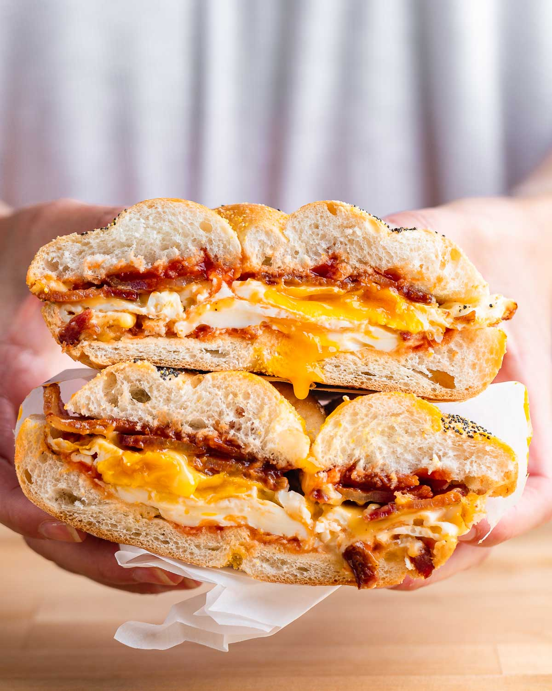

Bacon Egg & Cheese Recipe

Learn how to make the best Bacon Egg & Cheese!
While it may seem like a simple sandwich, there is a few key parts to this recipe that will take your Bacon Egg & Cheese to the next level.
Ingredients
- Bacon
- Eggs
- Cheese (American Recommended)
- Hard Roll
- Butter
- Ketchup
- Salt
- Pepper
Instructions
- Place your bacon on a baking sheet with parchment paper, and place in the oven
- AFTER the bacon is in the oven, turn it on to 400 F
- After 20 minutes, or when bacon is done to your liking, take out of oven and place on a plate with paper towels
- Heat a pan with butter over medium heat
- Cut your hard roll in half and place it face down in the pan
- Once you reach a nice golden brown, remove the roll
- Crack and egg into the pan
- Once the egg is almost done to your liking, place your slice of cheese on top and cover
- Place your egg on the roll, top with bacon, and add salt, pepper, and ketchup
- Wrap in parchment paper and let sit for 5 minutes